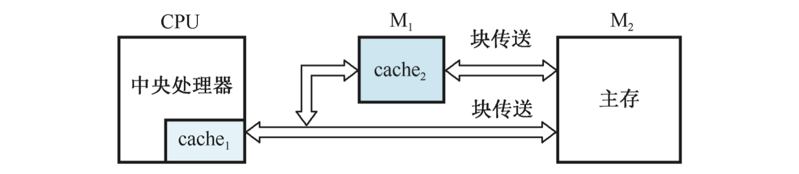

cache
cache的基本内容
cache是一种高速缓冲存储器，作用：解决 CPU 和主存之间速度不匹配的问题。原理是程序局部性：包含时间局部性和空间局部性。
时间局部性：如果一个存储单元被访问，则可能该单元很快就会被再次访问。这是因为程序存在着循环。
空间局部性：如果一个存储单元被访问，则该单元邻近的单元也可能很快被访问。这是因为程序中大部分指令是顺序存储、顺序执行的，数据也是以向量、数组、树、表等形式簇聚地存储在一起的。
cache 主要由 SRAM 组成，介于 CPU 和主存之间，它的容量远小于主存，但存取速度比主存快。cache 能高速地向 CPU 提供指令和数据，从而加快了程序的执行速度。
如今可以将小容量的 cache 集成到 CPU 中，使 cache 的工作速度接近于 CPU 的速度，组成两级以上的 cache 系统。

CPU 与 cache 之间的数据交换是以字为单位，而 cache 与主存之间的数据交换是以块为单位。一个块由一定数目个字组成。
当 CPU 读取内存中一个字时，便发出此字的内存地址到 cache 和主存。此时 cache 控制逻辑依据地址判断该字当前是否在 cache 中：
- 若在，则 cache 命中，此字立即传送给 CPU。
- 若不在，则 cache 未命中，用主存读周期把此字从主存读出送到 CPU，同时把含有这个字的整个块从主存送到 cache 中。
在一个程序执行期间，设 表示 cache 完成存取的总次数， 表示主存完成存取的总次数， 定义为命中率，则有：
若 表示命中时的 cache 访问时间， 表示未命中时的主存访问时间，则 cache/主存系统的平均访问时间 为：
访问效率 ：
记主存与 cache 的访问时间之比为 ，则：
增加 cache 的目的就是使主存的平均读出时间尽可能接近 cache 的读出时间，即 cache 的命中率应接近于 ，从而访问效率也会接近于 。
主存与cache的地址映射
全相联映射
将主存分为 块，每块含有 个字，从而主存中每个字的地址可分为 2 部分： 位块号 + 位块内字号。
将主存中某一块的所有内容存入 cache 的某行，再把块号存于 cache 该行的标记（tag）部分。
在全相联 cache 中，数据内容存储于 RAM 中，标记存储于相联存储器中。
当 CPU 指定了一个主存中某个字的地址时，地址中的块号与 cache 中所有行的标记同时在比较器中进行比较。
- 如果块号命中， 则按字地址从 cache 中读取一个字。
- 如果块号未命中，则到主存中进行读取。
直接映射
将主存分为 块，每块含有 个字，从而主存中每个字的地址可分为 2 部分： 位块号 + 位块内字号。
第 块会映射到 cache 的第 行，令 cache 的总行数为 ，则 之间的映射关系满足：
把主存首先分区，每个区的块数均为 。所有区的第 块在调入 cache 时只能映射到 cache 的第 行（）。
可见 cache 中的一行可以对应多个区中的一块。
设主存有 块，则创建 个区，每个区都有 块，每块中有 个字。
当 CPU 指定了一个主存中某个字的地址时，首先用区内块号找到 cache 中的特定一行，然后将地址中的区号部分与该行的标记进行比较。
- 若相符即命中，在 cache 中找到了所要求的块， 而后根据块内字号读取所需的字。
- 若不符则未命中，则到主存中进行读取。
组相联映射
当 CPU 指定了一个主存中某个字的地址时，首先用区内块号找到 cache 的某个组，然后将该组 v 行中的所有标记同时与主存地址的区号进行比较。
- 若存在某行的标记与区号匹配，则该行即命中，此后再以字地址部分检索该行的字。
- 如果此组没有一行的标记与之相符，即 cache 未命中，则到主存中进行读取。